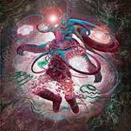
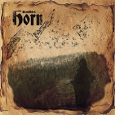
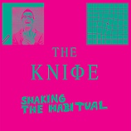
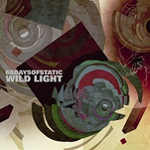
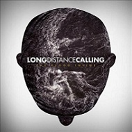
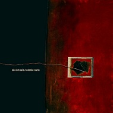

DECEPCIONES: LO PEOR DEL 2013
Partamos de una base. Si en Viena los camareros son famosos por el “schmeh”, la expresión de pasotismo o indiferencia ante la clientela, como no podía ser de otro modo en SBS también tenemos esa ración de desidia ante discos o grupos a los que ya catalogamos como malos per se. Sin embargo, uno se crea sus hypes, las bolas aumentan de tamaño y luego viene el batacazo. Discos de los que nos esperábamos mucho y se quedaron en aguas de borrajas.
Así pues, aquí tenéis esta jugosa ración de hate edulcorada con nuestro toque del bocachanclismo más exacerbado para todos vosotros. ¡Oh dios del hype, solo tu eres mi refugio!
____________________________________________________
Alice In Chains – The Devil Put Dinosaurs Here
The Devil Put Dinosaurs Here de Alice In Chains ha sido una decepción parcial. No es mal disco, y seguramente esté por encima que la mayoría de los discos de rock habidos este año, pero es que en comparación con el bofetón en la cara que fue Black Gives Way To Blues, aquí hay poca chicha y demasiado piloto automático en cuanto a las melodías vocales. Jerry Cantrel, a ponerse las pilas para la próxima. (rememorama)

Ministry – From Beer To Eternity
Quizá no es la decepción del año y tampoco lo peor (aunque bueno, poco falta), pero la supuesta traca final de Ministry con From Beer To Eternity es otra palada de mierda más que Al Jourgensen echa sobre el nombre y la historia de la banda. Ni tan siquiera le salva el hecho de ser el trabajo ‘póstumo’ del genial guitarrista Mike Scaccia, y es que el supuesto disco final (a ver si es verdad) de la banda es flojo se mire por dónde se mire, aburrido, sin chispa y con el piloto automático puesto. Un trabajo que hace que nos de la sensación que entre Houses Of The Molé y este disco existe algo más que una diferencia de nueve años. (psichoboy)
Infected Mushrooms – Friends On Mushrooms Vol I & II
Algo ya me olía a chamusquina con el anterior Army On Mushrooms. Los coqueteos con el dubstep y el petardeo electrónico más de moda han pasado de la ralla con los dos EPs que el dúo israelí han editado este año. Ya ni su buen hacer a los samplers les van a salvar de la quema. De entre un total de nueve temas lo único rescatable ha sido la colaboración con Kelsey Karter en el tema Now Is Gold del volumen 2. Bien es cierto que se trata de dos trabajos concebidos para trabajar conjuntamente con amigos de la banda que tocan otros vértices de la electrónica, pero joder… ¿No podían juntarse con Deadmau5? (mcore)

Coheed And Cambria – The Afterman Vol II
La segunda parte del The Afterman de Coheed and Cambria arrancó de malas el año. Poca cosa había que rascar. Salvo el hit puntual de Dark Side Of Me y algún experimento que sorprendentemente salió bien como Numbered Days, las canciones adolecían de autoindulgencia y muy poca sustancia. Un clásico vaya, lo de los discos dobles que hubieran quedado mejor como un único disco de menor minutaje. (rememorama)
My Bloody Valentine – mbv
Mi mayor decepción de este año corresponde con la sencilla ecuación que define el hype y la sensación de satisfacción: expectativas – realidad. Además viene por partida doble. Me refiero al último trabajo de lo seminales My Bloody Valentine. Y no porque mbv sea un mal disco, porque no lo es, ahí están la mayoría de cualidades que demostraron hace ya dos décadas, ojo. Fueron tales las expectativas generadas en absolutamente todas partes, máxime cuando la separación con el último trabajo de los irlandeses es de nada más y nada menos que de 22 años, que era imposible que no decepcionara a nadie. Y digo por partida doble porque cuando asistí al concierto que ofrecieron en el Primavera Sound esperaba que mi cerebro se convirtiera en un suflé del volumen al que en teoría tocaban, con la P.A. ya no al 11, si no al 12. Expectativas demasiado elevadas, volumen bajito.
Supongo que también son las maneras de afrontar este tipo de situaciones, porque con el último disco de Carcass, al que también separa de toda su anterior producción una buena añada, no tuve tantos prejuicios, y sin parecerme una maravilla, lo disfruté mucho más.(jorgenious)

Horn – Konflikt
Hace no mucho tiempo, en esta santa casa nos propusimos la meta de analizar también los discos que menos nos gustaban para entrenar nuestra crítica constructiva. Por la sencilla premisa de que se aprende el triple de los errores que de los aciertos. Dicho lo cuál, aún no sé qué le ha podido pasar a Nerrath. No es falta de rodaje lo suyo, pues su proyecto blacker Horn lleva doce años en activo. Tampoco es que no pase por un buen momento de fama: el año pasado vio la reedición en vinilo de su potente Naturkraft en EEUU de la mano de Pagan Flames. Lo tenía todo para dar un golpe en la mesa con su nuevo disco, y no lo hizo. Konflikt no es tanto un mal disco como un disco mediocre. Hasta Zangen und kessel la fórmula funciona, pero de ese corte en adelante suena todo muy de manual. Sin energía, sin garra, sin nada. Los ochos temas restantes son de lo más anodino que me he podido echar a la cara en el panorama blacker del pasado año. La dinámica de berridos, cánticos paganos y falsetes, igual que sí funciona en el último de Darkthrone, aquí hace aguas totalmente. Pero como bien dije antes, resulta más interesante tener cerca los discos que no nos gustan que los que amamos. El quid de la cuestión es hallar la distancia adecuada desde la que poder amar y repeler cualquiera de estas dos categorías. Y generar así riqueza crítica. (jolocho)

The Knife – Shaking The Habitual
The Knife, que con los dos primeros adelantos me volaron la cabeza (sigo pensando que Full of Fire es el mejor tema del año), pero luego su Shaking The Habitual tenía paja e idas de pinza sin mordiente por todos los lados. Desde luego no es un mal disco, pero esperaba muchísimo más. (tharandur)
El dato: El PrimaveraSound y sus nuevos conceptos:» hacerse una knifinha»
We Butter The Bread With Butter – Goldkinder
Esto no debería ya ni ser decepción tras el Ep que se marcaron el año pasado. Pero sorprende como un grupo que llamó tanto la atención con el pseudodeathcore electrónico de sus trabajos previos acabe convirtiéndose en una copia mala y barata de Rammstein que les acaba llevando hacia ningún lado. Mejor no mirar atrás. (mcore)
Standstill – Dentro De La Luz
En el ámbito nacional es de obligado cumplimiento destacar a Dentro de la Luz de Standstill. Cierto es que el grupo cada vez parecía más un proyecto en solitario de su frontman Enric Montefusto, pero la sensanción con el último trabajo es la de “una taza más por si no te gustaba el caldo”. (rememorama)

65daysofstatic – Wild Light
65daysofstatic con Wild Lights se marcaron otro disco que está lejos de ser malo, pero que me resulta un paso atrás en su carrera, pasando de ser una banda con uno sonido bastante personal dentro del post-rock a ser unos más. (tharandur)
Iwrestledaberonce – Late For Tonight
Que vuelva Krysta Cameron. La verdad es que con Late For Tonight estos norteameticanos ya han perdido la chispa que tenían. Es difícil repetir lo que ya hicieron en su primer disco y no caer en lo redundante en este tipo de grupos, por eso en su segundo álbum se precisaba un cierto cambio de sonido y acabó siendo un trabajo bastante bien compuesto. En Late For Tonight sin embargo no tenemos ni de lo uno ni de lo otro. Está formado por 12 temas bastante sosos, una nueva cantante que no le pega al grupo y un ambiente humorístico algo pasado de rosca. (mcore)

Long Distance Calling – The Flood Inside
El último disco de Long Distance Calling que tan buenos trabajos nos habían dejado anteriormente tampoco tenía mucha explicación. En The Flood Inside se dieron convergencia varias situaciones: la inclusión de un cantante mediocre que para mi gusto casaba con el grupo y una mayor experimentación en el sonido sin ningún rumbo ni coherencia. (rememorama)

Nine Inch Nails – Hesitation Marks
Se ha hablado largo y tendido sobre Hesitation Marks en esta casa. El último disco de Nine Inch Nails se llevó un dos por parte de Tharandur en su reseña mientras en la mayoría de páginas especializadas la cosecha era de notables, entre loas y alabanzas a la figura de Trent Reznor. Es normal que exista cierta disparidad entre medios o que una opinión se generalice, el mundo de la prensa musical es así, nos creemos el ombligo del mundo pero sin dejar de mirar de reojo al vecino para ver qué hace, pero aún me cuesta entender a que se debe esa opinión generalizada alrededor de la figura de Trent Reznor, esa necesidad de convertirle, de un tiempo a esta parte, en poco menos que en un Rey Midas de la música cuando está publicando un material mediocre, repleto de clichés y reciclaje de sonidos, y con unas canciones que caen en todo aquello de lo que él mismo renegaba años atrás. ¿De verdad un disco como Hesitation Marks es superior a trabajos menores, hasta no hace tanto, como With Teeth o Year Zero? (psichoboy)
El dato: No esperaba gran cosa ya de Reznor, pero tampoco semejante truño. Me parece que el 2 que le dí en su día en esta web es extremadamente generoso y que lo que Hesitation Marks se merece un rosquete, porque no hay por donde cogerlo. (tharandur)
____________________________________________________
Otras decepciones:
Asbestos: Al final el Aristocalipsis se quedó a medias. Una mancha que pesará sobre el expediente colectivo de SBS.
Rememorama: Discos de los que me esperaba más tenemos por ejemplo el Void Mother de los polacos Obscure Sphinx, la vuelta de los nu-metaleros 40 Below Summer (después de tanto tiempo podrían haber vuelto a tope) y aunque su tendencia ya era a la baja, el Memorial de Russian Circles. Aplastantes en directo pero con 3 temas rescatables en el disco. Echando un vistazo a los discos borrados de mi disco duro tenemos al How I Learned to Stop Giving a Shit and Love de Mindless Self Indulgence, Whales & Leeches de Red Fang, el The Paradigm Shift de Korn y por supuesto el Reflektor de Arcade Fire del que sobradamente hemos soltado mierda en esta casa.
Staff SBS: Esperamos que os haya gustado todo este especial.
____________________________________________________
Primera entrega
Segunda entrega
Tercera entrega
Apoyános